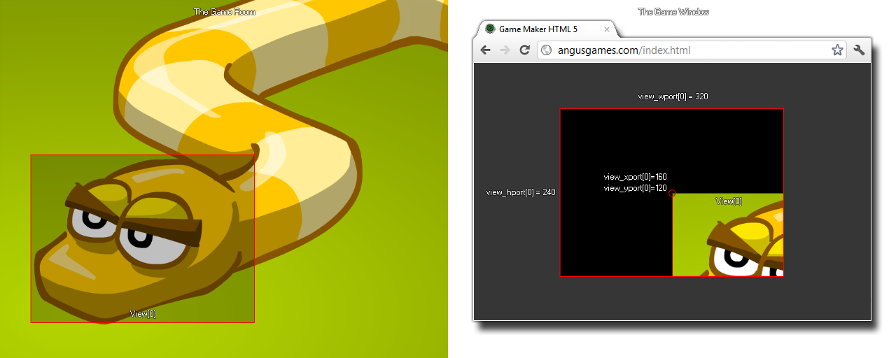
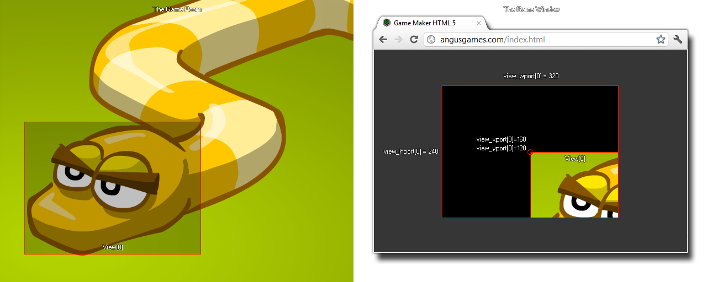

如果你仅有一个活动视野（因此只有一个视口），设置视口的x或y值，可以产生一些有趣的效果，但通常并不实用（看下面的图），所以最好保持x和y坐标为(0,0)。

view_yport[0...7]
返回： 实数
有了这个变量，可以获取或设置视口的y坐标。视口是视野在屏幕上的绘制区域。. 现在默认，对于 GameMaker: Studio ，游戏窗口（或者背景画布）和房间一样大，然而当你激活视野，这个行为会发生变化，并且使用得是所有视口的边界框的总和 。所以，如果有两个不同的视口在两个不同的位置，覆盖的总面积定义游戏窗口的大小。如下图说明：
如果你仅有一个活动视野（因此只有一个视口），设置视口的x或y值，可以产生一些有趣的效果，但通常并不实用（看下面的图），所以最好保持x和y坐标为(0,0)。

view_xport[0] = 0;
view_yport[0] = 0;
上述代码将重设view port[0]（视口）的位置为 显示器的(0,0)位置 (左上角)。